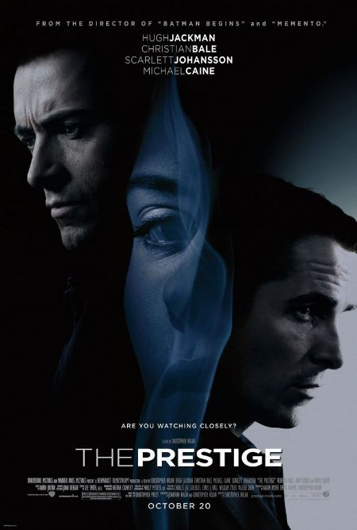

Scarlett Johansson
Scarlett Johansson was born in New York City. Her mother, Melanie Sloan, is from an Ashkenazi Jewish family, and her father, Karsten Johansson, is Danish. She has a sister, Vanessa Johansson, who is also an actress, a brother, Adrian, a twin brother, Hunter Johansson, born three minutes after her, and a paternal half-brother, Christian. Scarlett showed a passion for acting at a young age and starred in many plays. She began her acting career starring as Laura Nelson in the comedy film North (1994). The acclaimed drama film The Horse Whisperer (1998) brought Johansson critical praise and worldwide recognition. Following the film's success, she starred in many other films including the critically acclaimed cult film Ghost World (2001) and then the hit Lost in Translation (2003) with Bill Murray in which she again stunned critics. Later on, she appeared in the drama film Girl with a Pearl Earring (2003).Known For